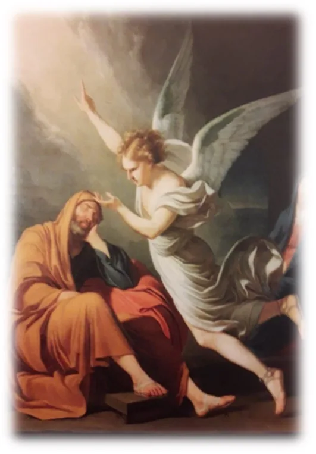
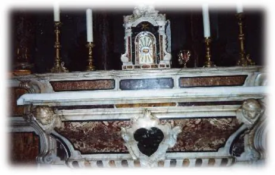
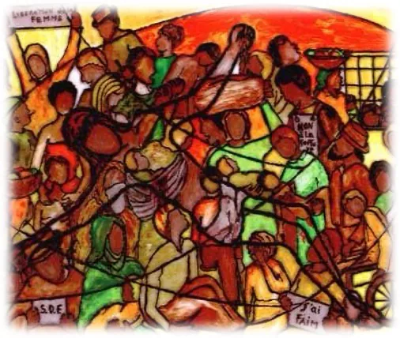
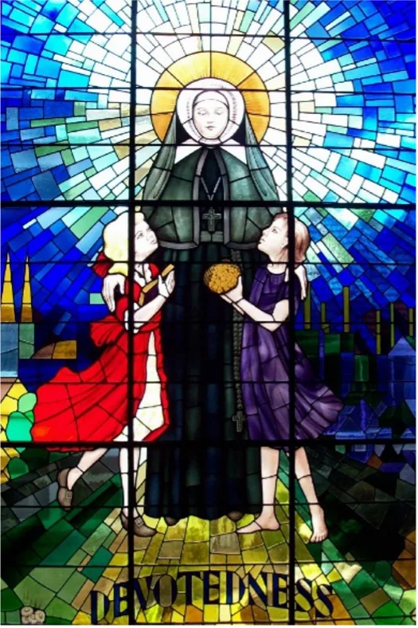

Charism and Spirituality
The founding inspiration for St Emilie De Vialar arose from two profound and intense spiritual experiences which she had early in life. They nourished and formed her as she responded to the gifts God had given her in order to found and direct the Congregation. She in turn shared these experiences with her Sisters so they too would be able to contemplate, experience and translate them into action in the Church.

Having been drawn to the Mystery of the Incarnation, she was called to contemplate the revelation made to St Joseph in Matthew 1:20-24.
The angel of the Lord appeared to Joseph in a dream and said to him: “Joseph son of David, do not be afraid to take Mary home as your wife, because she has conceived what is in her by the Holy Spirt. She will give birth to a son and you must name him Jesus, because he is the one who is to save his people from their sins”. When Joseph woke up, he did what the angel of the Lord had told him to do.
Emilie’s reflection on this Scriptural text was aided by an artistic work which she viewed in Toulouse and later had a copy placed in the Gaillac Chapel. For her St Joseph provided a pathway of silence, simplicity and obedience in living out what God was asking him to accomplish. She herself followed a similar pathway with audacity, courage and passion for the glory of God. Her desire was to participate in God’s saving work for humanity and with her first companions were gripped by the urgency to be a living sign of the love of God by means of everyday actions. Naming the Institute as ‘The Sisters of St Joseph of the Apparition’, confirms her desire to receive the Mystery of the Incarnation in silence and humility and with the motto of ‘Devotedness unto Death’.
The second event was a vision she received in St Peter’s Church in Gaillac which she wrote about in her ‘Account of Graces’ in response to a request by her spiritual director in 1848.
Suddenly, I saw Jesus Christ upon the altar. He was lying with his head resting on the Gospel side and his feet on the Epistle side. The Savior’s arms were outstretched in the form of a cross. I could distinguish his face and his hair falling on his shoulders; I noticed on his neck a lock of hair… A shadow concealed part of his sacred body, but his breast, stomach, side and feet were visible – whether to the eyes of my soul or to those of my body I cannot say – but as clear to me as a person standing before me. What drew my gaze most were the Sacred Wounds which I could discern quite clearly… which I gazed at intently.

This vision with its Eucharist connotations and portraying the sufferings of Jesus, aided Emilie to see with compassion the sufferings and subsequent needs of those around her as the result of the unconditional love of God for all people.
How satisfying it is for the heart when it is given to making another happy and to bring relief to suffering humanity. (To M. de Vialar 1853)

It became clear to Emilie that the way in which Jesus attended to the sufferings of humanity was one that frees and gives life. By her ‘works of charity’ she inspired her Sisters to uplift, educate and bring relief to people regardless of their religion or culture, with a priority for the powerless and those who did not know Christ.
The Lord causes to burn within me that same fire which he enkindled long ago, and I rejoice in this grace, for if God did not breathe on me the spirit of zeal, my heart would cease to be animated and then I would be unable to do anything anymore. (To Fr Balitrand 1843)
With trust in Divine Providence and an attentiveness to the action of the Holy Spirit, her spiritualty was characterized by a practical and simple way of life. She developed a receptiveness to the things of God where the spirit of recollection inspired her actions. This continual awareness of the presence of God is what animated her in carrying out and supporting her Sisters in their missionary life.
Her way of gazing and perceiving the reality of God present within society, came from a sense of wonder and thanksgiving for the Love of God. Her spiritualty was also marked with the gift of self, and her way of discipleship was constantly marked by the seal of the Cross. For her, living the Gospel and following the person of Jesus, is summed up by the motto of the Congregation Devotedness unto Death. Writing to one of her Sisters in 1840 she said:
My Sisters have been and will always remain daughter of devotedness and sacrifice. (To Sr. Pauline Gineste, 1840)
Today this charism remains for the Sisters a call to participate in the mission of Christ as they follow the path traced out by St Emilie and to enter into the movement of the Incarnation.
